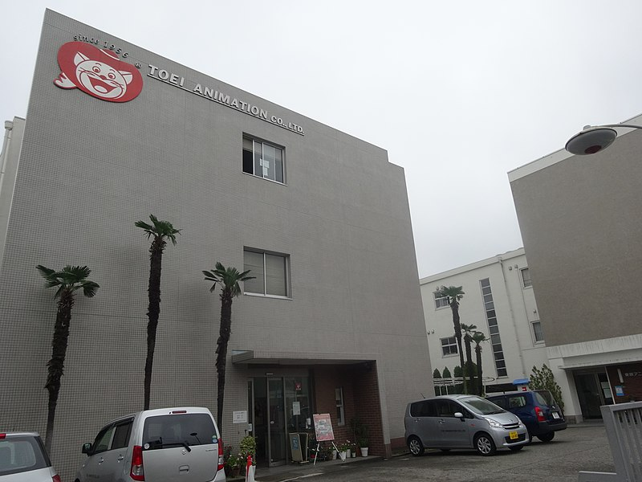

Toei Animation Co., Ltd (東映アニメーション株式会社 Tōei Animēshon Kabushiki-gaisha?) es un estudio de animación japonés propiedad de la empresa Toei Company, Limited.

Ha creado varias series de televisión y películas y ha adaptado mangas como series animadas, muchas populares en todo el mundo. Toei es accionista de la cadena japonesa de televisión por satélite anime Animax junto con otros estudios de animación y productoras, como Sunrise, TMS Entertainment y Nihon Ad Systems Inc. La empresa tiene su sede en Ohizumi Studio en Nerima, Tokio.